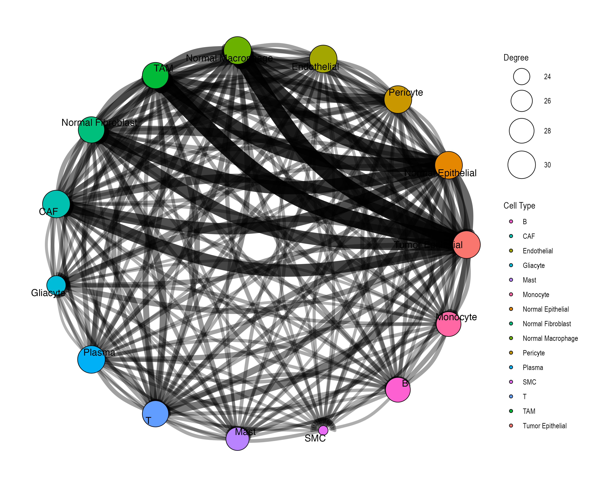
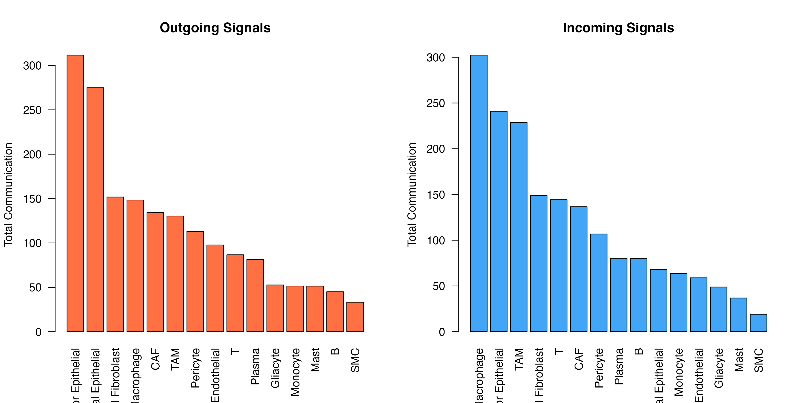
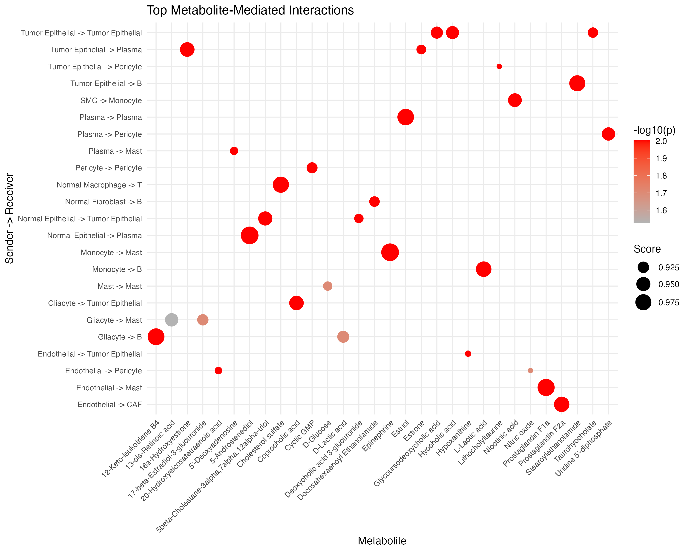
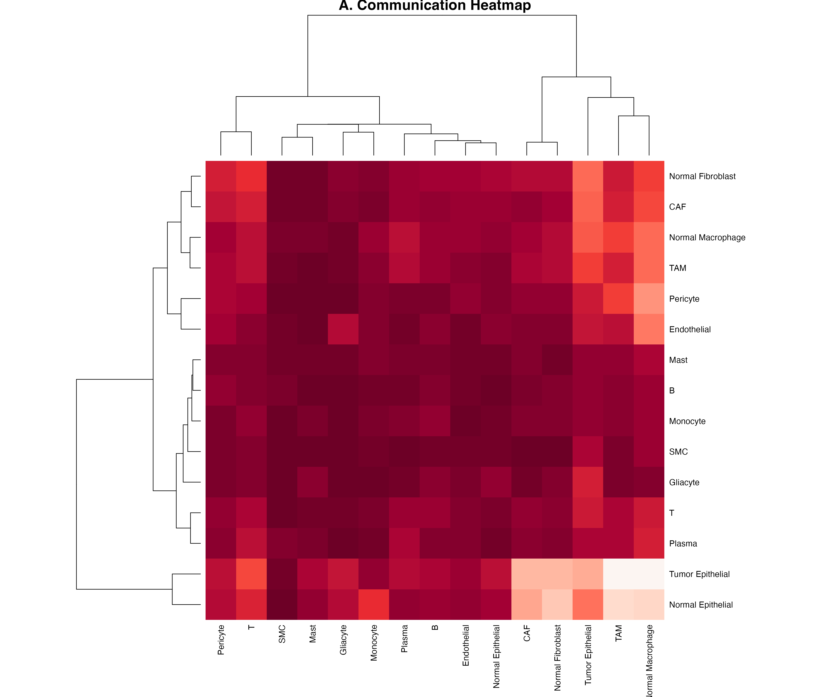
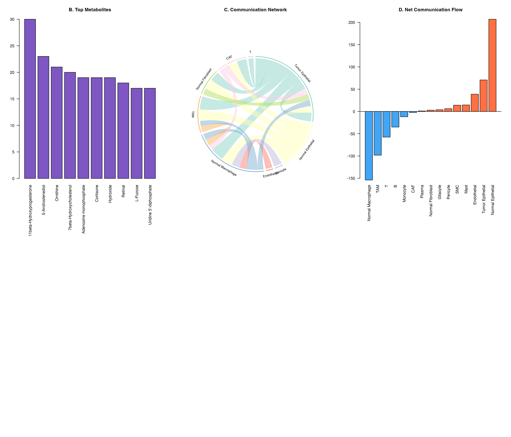
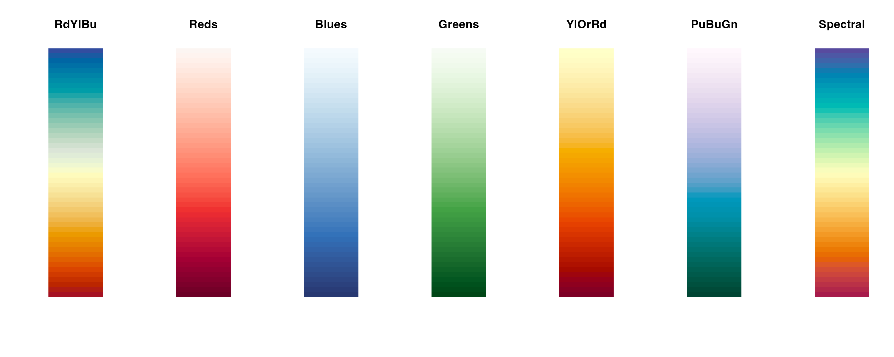

Setup
library(scMetaLink)
library(Matrix)
# Run complete analysis
data(crc_example)
obj <- createScMetaLink(crc_expr, crc_meta, "cell_type")
obj <- inferProduction(obj, verbose = FALSE)
obj <- inferSensing(obj, verbose = FALSE)
obj <- computeCommunication(obj, n_permutations = 100, verbose = FALSE)
obj <- filterSignificantInteractions(obj, adjust_method = "none") # For demo1. Communication Heatmap
The heatmap shows communication strength between cell type pairs, with rows representing sender cells and columns representing receiver cells.
Basic Heatmap

Figure 1: Basic Communication Heatmap. Pairwise communication scores aggregated across all significant metabolite interactions. Darker colors indicate stronger communication potential.
Customized Heatmap
plotCommunicationHeatmap(
obj,
cluster_rows = TRUE, # Cluster senders
cluster_cols = TRUE, # Cluster receivers
show_values = FALSE # Show score values
)
Figure 2: Customized Heatmap with Clustering. Hierarchical clustering reveals cell type groups with similar communication patterns.
Metabolite-Specific Heatmap
# Create heatmap for specific metabolites
sig <- obj@significant_interactions
lactate_sig <- sig[sig$metabolite_name == "L-Lactic acid", ]
if (nrow(lactate_sig) > 0) {
# Build matrix
cell_types <- unique(c(lactate_sig$sender, lactate_sig$receiver))
mat <- matrix(0, length(cell_types), length(cell_types),
dimnames = list(cell_types, cell_types)
)
for (i in 1:nrow(lactate_sig)) {
mat[lactate_sig$sender[i], lactate_sig$receiver[i]] <- lactate_sig$communication_score[i]
}
heatmap(mat,
col = hcl.colors(50, "Reds"), scale = "none",
main = "Lactate-Mediated Communication"
)
}2. Chord Diagram (Circle Plot)
Chord diagrams elegantly show the flow of communication between cell types. The width of each ribbon represents the strength of communication.
Basic Chord
Figure 3: Communication Chord Diagram. Ribbons connect sender to receiver cell types. Ribbon width is proportional to communication strength, and colors represent the sender cell type.
Customized Chord
plotCommunicationCircle(
obj,
top_n = 30, # Top interactions
transparency = 0.4, # Link opacity (0-1)
title = "Top 30 Metabolic Communications"
)Figure 4: Customized Chord Diagram. Enhanced visualization with adjusted transparency showing top 30 interactions.
3. Network Visualization
Network plots show communication as a graph structure.

Customized Network
plotCommunicationNetwork(
obj,
layout = "circle", # Layout algorithm: "fr", "circle", "kk", etc.
node_size_by = "degree", # Size by: "degree" or "centrality"
edge_width_scale = 3, # Scale factor for edge widths
min_score = 0.1 # Minimum score threshold
)
4. Metabolite Profile Visualization
Visualize production and sensing profiles for specific metabolites.
Single Metabolite Profile
# Find a metabolite that exists in the data
sig <- obj@significant_interactions
if (nrow(sig) > 0) {
top_met <- names(sort(table(sig$metabolite_name), decreasing = TRUE))[1]
plotMetaboliteProfile(obj, metabolite = top_met)
}Figure 5: Metabolite Profile. Production (left) and sensing (right) scores across cell types for a specific metabolite.
Production vs Sensing Comparison
# Compare profiles for multiple metabolites
par(mfrow = c(2, 2))
top_mets <- names(sort(table(sig$metabolite_name), decreasing = TRUE))[1:4]
for (met in top_mets) {
tryCatch(
{
plotMetaboliteProfile(obj, metabolite = met)
title(sub = met)
},
error = function(e) {
plot.new()
text(0.5, 0.5, paste(met, "\nNot found"), cex = 1.2)
}
)
}
par(mfrow = c(1, 1))5. Production-Sensing Comparison
Cell Type Roles: Producers vs Sensors
# Get common metabolites
prod_scores <- obj@production_scores
sens_scores <- obj@sensing_scores
common_mets <- intersect(rownames(prod_scores), rownames(sens_scores))
if (length(common_mets) > 0) {
avg_prod <- colMeans(prod_scores[common_mets, ])
avg_sens <- colMeans(sens_scores[common_mets, ])
plot(avg_prod, avg_sens,
xlab = "Average Production Potential",
ylab = "Average Sensing Capability",
main = "Cell Type Metabolic Roles",
pch = 19, cex = 1.5, col = "#1976D2"
)
text(avg_prod, avg_sens, names(avg_prod), pos = 3, cex = 0.7)
abline(0, 1, lty = 2, col = "gray")
}
Figure 6: Cell Type Metabolic Roles. Each point represents a cell type. Position shows average production (x-axis) vs sensing (y-axis) potential. Cell types above the diagonal are net sensors; those below are net producers.
Specific Metabolite: Production vs Sensing
# Compare for a specific metabolite
lactate_id <- "HMDB0000190"
if (lactate_id %in% rownames(prod_scores) && lactate_id %in% rownames(sens_scores)) {
prod <- prod_scores[lactate_id, ]
sens <- sens_scores[lactate_id, ]
par(mfrow = c(1, 2))
barplot(sort(prod, decreasing = TRUE),
las = 2, col = "#FF7043",
main = "Lactate Production", ylab = "Score", cex.names = 0.7
)
barplot(sort(sens, decreasing = TRUE),
las = 2, col = "#42A5F5",
main = "Lactate Sensing", ylab = "Score", cex.names = 0.7
)
par(mfrow = c(1, 1))
}
Figure 7: Lactate Production and Sensing. Comparison of lactate production (orange) vs sensing (blue) across cell types, revealing the communication axis.
6. Summary Statistics Plots
Cell Type Communication Summary
sig <- obj@significant_interactions
par(mfrow = c(1, 2))
# Outgoing
outgoing <- aggregate(communication_score ~ sender, data = sig, FUN = sum)
outgoing <- outgoing[order(-outgoing$communication_score), ]
barplot(outgoing$communication_score,
names.arg = outgoing$sender,
las = 2, col = "#FF7043", main = "Outgoing Signals",
ylab = "Total Communication"
)
# Incoming
incoming <- aggregate(communication_score ~ receiver, data = sig, FUN = sum)
incoming <- incoming[order(-incoming$communication_score), ]
barplot(incoming$communication_score,
names.arg = incoming$receiver,
las = 2, col = "#42A5F5", main = "Incoming Signals",
ylab = "Total Communication"
)

7. Custom Visualizations
Communication Matrix with ggplot2
library(ggplot2)
# Get communication matrix
comm_mat <- getCommunicationMatrix(obj, aggregate_method = "sum")
# Convert to long format
comm_df <- reshape2::melt(comm_mat)
names(comm_df) <- c("Sender", "Receiver", "Score")
ggplot(comm_df, aes(x = Receiver, y = Sender, fill = Score)) +
geom_tile(color = "white") +
scale_fill_gradient2(
low = "white", mid = "#FFCDD2", high = "#C62828",
midpoint = median(comm_df$Score[comm_df$Score > 0])
) +
theme_minimal() +
theme(
axis.text.x = element_text(angle = 45, hjust = 1, size = 8),
axis.text.y = element_text(size = 8)
) +
labs(
title = "Cell-Cell Communication via Metabolites",
fill = "Score"
)
Interaction Dot Plot
# Top interactions as dot plot
top_int <- head(sig[order(-sig$communication_score), ], 30)
top_int$interaction <- paste(top_int$sender, "->", top_int$receiver)
ggplot(top_int, aes(x = metabolite_name, y = interaction)) +
geom_point(aes(size = communication_score, color = -log10(pvalue_adjusted))) +
scale_color_gradient(low = "gray70", high = "red") +
scale_size_continuous(range = c(2, 8)) +
theme_minimal() +
theme(
axis.text.x = element_text(angle = 45, hjust = 1, size = 8),
axis.text.y = element_text(size = 8)
) +
labs(
title = "Top Metabolite-Mediated Interactions",
x = "Metabolite", y = "Sender -> Receiver",
size = "Score", color = "-log10(p)"
)
8. Publication-Ready Figures
Combined Figure Panel
layout(matrix(c(1, 1, 2, 3, 3, 4), nrow = 2, byrow = TRUE),
widths = c(2, 2, 2), heights = c(1, 1)
)
# Panel A: Heatmap
comm_mat <- getCommunicationMatrix(obj)
heatmap(comm_mat,
col = hcl.colors(50, "Reds"), scale = "none",
main = "A. Communication Heatmap", margins = c(8, 8)
)
# Panel B: Top metabolites
par(mar = c(8, 4, 4, 2))
met_counts <- head(sort(table(sig$metabolite_name), decreasing = TRUE), 10)
barplot(met_counts,
las = 2, col = "#7E57C2",
main = "B. Top Metabolites"
)
# Panel C: Chord
par(mar = c(2, 2, 4, 2))
plotCommunicationCircle(obj, top_n = 20, title = "C. Communication Network")
# Panel D: Sender/Receiver summary
par(mar = c(8, 4, 4, 2))
net_flow <- sapply(unique(c(sig$sender, sig$receiver)), function(ct) {
sum(sig$communication_score[sig$sender == ct]) -
sum(sig$communication_score[sig$receiver == ct])
})
net_flow <- sort(net_flow)
cols <- ifelse(net_flow > 0, "#FF7043", "#42A5F5")
barplot(net_flow, col = cols, las = 2, main = "D. Net Communication Flow")
abline(h = 0)
9. Exporting Figures
# Save as PDF
pdf("communication_heatmap.pdf", width = 10, height = 8)
plotCommunicationHeatmap(obj)
dev.off()
# Save as PNG (high resolution)
png("communication_chord.png", width = 3000, height = 3000, res = 300)
plotCommunicationCircle(obj)
dev.off()
# Save as SVG (vector format)
svg("communication_network.svg", width = 10, height = 8)
plotCommunicationNetwork(obj)
dev.off()Color Palettes Reference
# Available color palettes
palettes <- c("RdYlBu", "Reds", "Blues", "Greens", "YlOrRd", "PuBuGn", "Spectral")
par(mfrow = c(1, length(palettes)))
for (pal in palettes) {
image(matrix(1:50, nrow = 1),
col = hcl.colors(50, pal),
axes = FALSE, main = pal
)
}
Next Steps
- Spatial Analysis: Spatial transcriptomics visualization
- Applications: Real-world analysis examples
- Explore parameter tuning for optimal visualizations